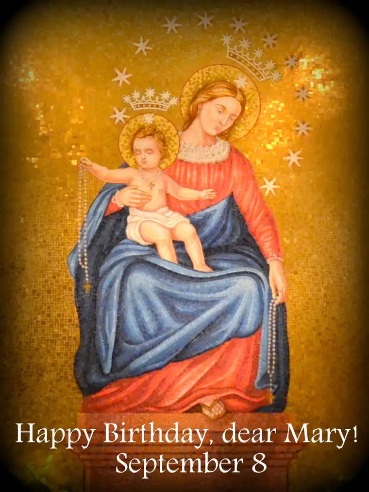

{kind=link}
This image comes from the national basilica in Washington, D.C., from last January, when we visited for the March for Life. The basilica is filled with images of Our Blessed Mother; visuals of her from every land, in every conceivable representation – or almost.
For a while now, I’ve been holding a little treasure nearby. I wanted to wait for the right time to share of it, and now, the week of Mother Mary’s birthday, seems as good a time as any.
Several years back, I was approached by a gentleman from our parish to be part of a vocal recording; a song that would be used to honor our Lord’s mother. I was honored to have been asked! The recordings were done in a home studio, and over time, prepared and mixed for the final recording. The song is now ready for purchase and sharing.
The website for Mediatrix Media explains more fully what it’s all about, and also displays a portion of the recording (you won’t hear my voice since I come in after the point at which the sample recording stops).
A lot has happened to me spiritually since this recording was first laid out. Since then, Mary has become an even more precious presence in my life. Though I have held her dear as far back as I can remember, I have not always given her the attention she deserves, especially given what and whom she gave to us, and how, at the foot of the cross, Jesus entrusted her to John, and thus, to all of us. Despite our inattention, however, Mary has never stopped loving us. She is, in a very real sense, a spiritual mother to all. Though we don’t always or often enough recognize the gift she is to our broken world, her holy example has the propensity to bring so much light and hope our way.
In just a few days, I will commemorate the one-year anniversary of my consecration to Mary. Every morning these past months, I have started my day in prayer with the following words:
“Mary, my mother, I give myself to you as your possession and property. Please make of me, of all that I am and have, whatever most pleases you. Let me be a fit instrument in your immaculate and merciful hands for bringing the greatest possible glory to God.” Amen.
My soul sister Ann Marie, who completed her consecration at the same time as I did on Our Lady of Sorrows 2014, has decided with me to renew our consecration together during our upcoming trip to Philadelphia at one of the shrines there. So I hope to write more about that very soon. For now, enjoy perusing the Mediatrix Media page and listening to the song sample. As noted here, any proceeds from purchases of the recording will go toward non-profits that help the poor.
Though Mary’s birthday was officially yesterday, we have the rest of the month still to celebrate. I hope you will rejoice with me in the fact that Mary was born, and because of this, it was possible for our Savior came into the world, and ultimately, offering redemption to us all. What joyful news worth celebrating together!
Happy Birthday Mary! Thanks for the light, grace and hope you bring to the world!
Q4U: How much importance do you give birthdays? What was your favorite birthday of all time?